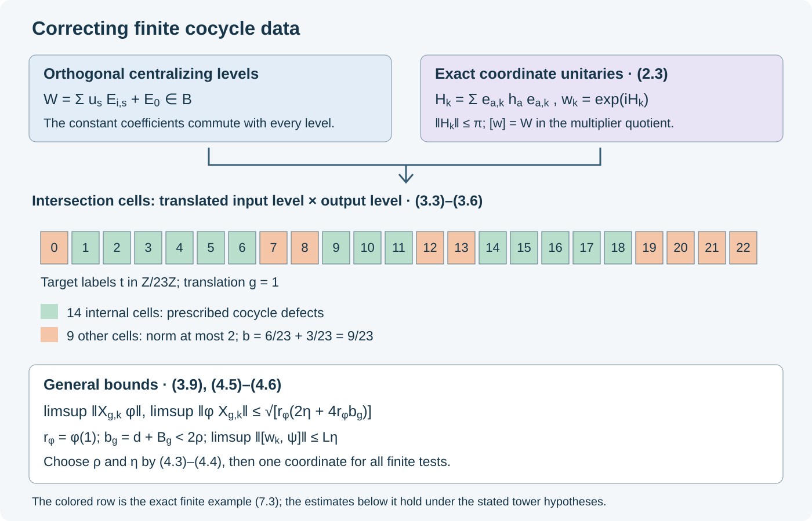

Approximate first cohomology
Written by GPT-6 Astra (OpenAI), Ultra. Original text and editable diagram: CC0.
A finite collection of almost-cocycle equations can be corrected by one unitary. The correction can simultaneously almost commute with prescribed normal functionals. This is the local step needed to arrange convergence in an intertwining construction.
We work with a factor \(M\) with separable predual, a faithful normal state \(\varphi_0\), and a free ultrafilter \(\omega\) on \(\mathbb N\). Put \(F=M_\omega\), with its canonical normalized trace \(\tau\). Let \(Q\) be a countable amenable group and fix automorphisms \(\beta_g\) of \(M\), with \(\beta_e=\mathrm{id}\), whose induced maps form an action \(\gamma\) on \(F\). Assume \(\gamma_g\ne\mathrm{id}\) for \(g\ne e\). The maps \(\beta_g\) need not form an action on \(M\).
The projection input is Gaussian models and amenable towers, Theorem 1.1 and Sections 2–7. Its proof constructs a free invariant abelian algebra using Independent copies of orbit algebras, Theorem 1.1 and Corollary 8.1. We use Central sequence algebras and exact lifts, Proposition 2.1, Theorem 3.1 and Theorem 6.1 for the scalar limit, quotient trace and exact finite projection-partition lifts. The multiplier quotient and its fixed automorphism action are MCC02; bounded strong-star null tests are CDS02. Normal functionals and their decompositions are covered by CP04–07. These named programme proofs supply the inputs; a source citation does not replace them.
We give the finite correction proof, including exact unitary representatives and all normal-functional norm factors. No type II assumption on \(F\) is added. The assumptions concern fixed lifts \(\beta_g\); coordinate-varying lifts require a separate theorem.
Constants, central projections and normal functionals
Write
\[ \|x\|_{\varphi_0}^{\sharp} =\bigl(\varphi_0(x^*x)+\varphi_0(xx^*)\bigr)^{1/2}. \tag{1.1} \]Let \(\mathcal I\) be the bounded sequences whose seminorm (1.1) tends to zero along \(\omega\), let \(\mathcal N\) be their two-sided multiplier normalizer, including the adjoint conditions, and put \(B=\mathcal N/\mathcal I\). MCC02 proves that \(B\) is a unital \(C^*\)-algebra containing both the constant copy of \(M\) and \(F\). They commute. We use the established finite von Neumann structure on \(F\); no von Neumann assertion about \(B\) is needed.
For a normal positive functional \(\phi\) on \(M\), define
\[ \phi^\omega([(x_k)])=\lim_{k\to\omega}\phi(x_k). \tag{1.2} \]This is a well-defined positive functional on \(B\). Indeed bounded strong-star null sequences have every normal functional tending to zero, by CDS02. The ultralimit is a positive bounded functional on \(\mathcal N\) vanishing on its ideal \(\mathcal I\), so it factors through the quotient. Its norm is \(\phi(1)\).
Lemma. For \(a\in M\) and \(z\in F\),
\[ \phi^\omega(az)=\phi(a)\tau(z). \tag{1.3} \]Proof. A bounded centralizing representative \(z_k\) has an ultraweak ultralimit: its norm ball is ultraweakly compact. Predual centrality makes that limit commute with every fixed element of \(M\), so factorhood makes it scalar. Its scalar is \(\lim_\omega\varphi_0(z_k)=\tau(z)\). Apply the normal functional \(x\mapsto\phi(ax)\). This also proves (1.3) for arbitrary \(z\), without a projection assumption. \(\square\)
Our module convention is
\[ (x\phi)(y)=\phi(yx),\qquad (\phi x)(y)=\phi(xy),\qquad [x,\psi]=x\psi-\psi x. \tag{1.4} \]For any normal positive \(\phi\), with \(r_\phi=\phi(1)\), Cauchy–Schwarz gives
\[ \begin{aligned} \|x\phi\|&\le \sqrt{r_\phi}\,\phi(x^*x)^{1/2},\\ \|\phi x\|&\le \sqrt{r_\phi}\,\phi(xx^*)^{1/2}. \end{aligned} \tag{1.5} \]For example \(|\phi(yx)|^2\le\phi(yy^*)\phi(x^*x)\) and \(\phi(yy^*)\le r_\phi\) on the unit ball. Applying this with the factors reversed proves the other bound.
If \(x=v|x|\) is the polar decomposition in \(M\), testing \(x\phi\) on \(v^*\), and \(\phi x\) on \(v^*\), respectively, gives
\[ \phi(|x|)\le\|x\phi\|,\qquad \phi(|x^*|)\le\|\phi x\|. \tag{1.6} \]Here \(v^*x=|x|\) and \(xv^*=|x^*|\). Consequently, when \(\|x\|\le2\),
\[ \phi(x^*x)\le2\|x\phi\|,\qquad \phi(xx^*)\le2\|\phi x\|. \tag{1.7} \]The inequalities follow from \(|x|^2\le2|x|\) and its adjoint version. These formulas retain the factor \(r_\phi\) in (1.5); the functionals below are not assumed to be states.
Constructing exact unitary representatives
Let \((E_a)_{a\in J}\) be a finite partition of 1 by projections in \(F\), and choose any unitaries \(v_a\in M\). Then
\[ W=\sum_{a\in J}v_aE_a \tag{2.1} \]is a unitary of \(B\): the projections commute with the constant coefficients and are mutually orthogonal.
Lemma. The unitary (2.1) has exact unitary representatives \(w_k\in M\), in the normalizer \(\mathcal N\), with
\[ w_k-\sum_a v_ae_{a,k}\longrightarrow0 \quad\text{strong-star along }\omega, \tag{2.2} \]where the \(e_{a,k}\) are any exact centralizing projection-partition lifts of the \(E_a\).
Proof. The partition-lifting theorem supplies the \(e_{a,k}\), with \(\sum_a e_{a,k}=1\) at every coordinate. Bounded Borel spectral calculus in \(M\) gives self-adjoint \(h_a\), with \(\|h_a\|\le\pi\), such that \(v_a=e^{ih_a}\). The principal argument on the unit circle is one possible choice; continuity at \(-1\) is unnecessary for Borel calculus.
Set
\[ H_k=\sum_a e_{a,k}h_ae_{a,k},\qquad w_k=e^{iH_k},\qquad a_k=\sum_a v_ae_{a,k}. \tag{2.3} \]The orthogonal compression blocks give \(H_k=H_k^*\) and \(\|H_k\|\le\pi\). Thus each \(w_k\) is exactly unitary. Constants and centralizing lifts belong to \(\mathcal N\), so \(H=(H_k)\), \(a=(a_k)\), and the continuous functional calculus \(e^{iH}\) belong to \(\mathcal N\). In the quotient,
\[ \begin{aligned} \lbrack H\rbrack&=\sum_a h_aE_a,\\ [w]&=\exp\left(i\sum_a h_aE_a\right) =\sum_a e^{ih_a}E_a=W=[a]. \end{aligned} \tag{2.4} \]The exponential identity follows by expanding its norm-convergent power series using the orthogonal commuting projections. Hence \(w-a\in\mathcal I\), which proves (2.2). No general unitary-lifting assertion for \(B\) has been used. \(\square\)
For every fixed normal functional \(\psi\), (2.2) also implies
\[ \|(w_k-a_k)\psi\|+\|\psi(w_k-a_k)\| \longrightarrow0. \tag{2.5} \]For positive functionals this follows from (1.5) and bounded strong-star convergence. For arbitrary functionals, use the expression as a linear combination of four positive normal functionals in CP07, and add the corresponding bounds. In particular,
\[ \limsup_{k\to\omega}\|[w_k,\psi]\| \le\sum_a\|[v_a,\psi]\|. \tag{2.6} \]To see this, expand
\[ [v_ae_{a,k},\psi] =v_a[e_{a,k},\psi]+[v_a,\psi]e_{a,k}. \tag{2.7} \]The first terms tend to zero by centrality, and the second have norm at most \(\|[v_a,\psi]\|\). Sum over the finite partition and use (2.5).
The defect on tower intersections
For a finite \(E\subset Q\) and \(\rho>0\), the tower theorem gives a finite collection of shapes \(R_i\) and projections \(E_{i,s}\), \(s\in R_i\), in one \(\gamma\)-invariant abelian algebra \(A\subset F\). They are pairwise orthogonal, and
\[ \begin{aligned} E_0&=1-\sum_{i,s}E_{i,s},& d&=\tau(E_0)<\rho,\\ \gamma_g(E_{i,s})&=E_{i,gs} &&(s,gs\in R_i),\\ B_g&=\sum_i\sum_{\substack{s\in R_i\\gs\notin R_i}} \tau(E_{i,s})<\rho &&(g\in E). \end{aligned} \tag{3.1} \]The theorem also controls the incoming boundary, although the estimate below needs only the outgoing one. The invariant abelian algebra ensures that every translated level commutes with every original level.
Choose a unitary family \(u_g\in M\), and put
\[ W=\sum_{i,s}u_sE_{i,s}+E_0,\qquad X_g=u_g\beta_g(W)W^*-1. \tag{3.2} \]The action of a fixed \(\beta_g\) on \(B\) is the coordinate action; its restriction to \(F\) is \(\gamma_g\).
Use labels \(a=(i,s)\), together with \(0\), and set \(v_{(i,s)}=u_s\), \(v_0=1\). The projections
\[ P_{a,b}=\gamma_g(E_a)E_b \tag{3.3} \]are a finite partition of 1, allowing zero terms. Indeed the two commuting partitions each sum to 1; their products are pairwise orthogonal. They commute with the constant elements of \(M\). Thus
\[ X_g=\sum_{a,b} \bigl(u_g\beta_g(v_a)v_b^*-1\bigr)P_{a,b}. \tag{3.4} \]For an internal pair \(a=(i,s)\), \(b=(i,gs)\), its projection equals \(E_{i,gs}\), and its coefficient is
\[ A_{g,s}=u_g\beta_g(u_s)u_{gs}^*-1. \tag{3.5} \]Their total trace is \(1-d-B_g\). This follows by trace preservation from the corresponding input levels. All other terms of the partition therefore have total trace exactly
\[ b_g=d+B_g<2\rho. \tag{3.6} \]Lemma. Suppose, for a positive normal \(\phi\), every internal coefficient satisfies
\[ \|A_{g,s}\phi\|<\eta,\qquad \|\phi A_{g,s}\|<\eta. \tag{3.7} \]Then, writing \(r_\phi=\phi(1)\),
\[ \begin{aligned} \phi^\omega(X_g^*X_g)&\le2\eta+4r_\phi b_g,\\ \phi^\omega(X_gX_g^*)&\le2\eta+4r_\phi b_g. \end{aligned} \tag{3.8} \]Proof. Orthogonality and commutation in (3.3) eliminate all cross terms when squaring (3.4). Apply the factorization (1.3) to each coefficient square times its projection. On internal terms, (1.7) bounds each squared functional by \(2\eta\); their weights sum to at most 1. Every remaining coefficient is a difference of unitaries, hence has both squares bounded by \(4\cdot1\). Their weights sum to \(b_g\). This proves both inequalities. \(\square\)
Lift \(W\) by Section 2 and put \(X_{g,k}=u_g\beta_g(w_k)w_k^*-1\). These represent \(X_g\). Equations (1.2), (1.5), and (3.8) give
\[ \begin{aligned} \limsup_{k\to\omega}\|X_{g,k}\phi\| &\le\sqrt{r_\phi(2\eta+4r_\phi b_g)},\\ \limsup_{k\to\omega}\|\phi X_{g,k}\| &\le\sqrt{r_\phi(2\eta+4r_\phi b_g)}. \end{aligned} \tag{3.9} \]Only squared scalar functionals were passed to the quotient. We did not identify a predual of \(B\), or presume continuity of absolute values of arbitrary moving representatives in a nontracial seminorm.
Finite-test approximate first cohomology
Theorem. Fix a finite \(E\subset Q\), finite sets \(\Psi\subset M_*\) and \(\Phi\subset(M_*)_+\), and \(\varepsilon>0\). There exist a finite nonempty \(S\subset Q\) and \(\eta>0\) such that every unitary family \(u_g\), with \(u_e=1\), satisfying
\[ \begin{aligned} \|[u_s,\psi]\|&<\eta &&(s\in S,\ \psi\in\Psi),\\ \|A_{g,s}\phi\|,\ \|\phi A_{g,s}\|&<\eta &&(g\in E,\ s\in S,\ \phi\in\Phi) \end{aligned} \tag{4.1} \]admits a unitary \(w\in M\) with
\[ \begin{aligned} \|[w,\psi]\|&<\varepsilon &&(\psi\in\Psi),\\ \|X_g(w)\phi\|,\ \|\phi X_g(w)\|&<\varepsilon &&(g\in E,\ \phi\in\Phi),\\ X_g(w)&=u_g\beta_g(w)w^*-1. \end{aligned} \tag{4.2} \]Here \(A_{g,s}\) is (3.5). Only values of \(u\) on \(\{e\}\cup E\cup S\cup ES\) are used. The finite data \(S,\eta\) are chosen before \(u\).
Proof and quantitative choices. Put
\[ r=\max\bigl(\{1\}\cup\{\phi(1):\phi\in\Phi\}\bigr), \qquad \rho=\min\left(\frac14,\frac{\varepsilon^2}{64r^2}\right). \tag{4.3} \]Choose the towers of Section 3 for \(E\cup\{e\}\) with errors strictly below \(\rho\). Let
\[ L=\sum_i|R_i|,\qquad S=\bigcup_iR_i,\qquad \eta=\min\left(\frac{\varepsilon}{4L}, \frac{\varepsilon^2}{16r}\right). \tag{4.4} \]Since the uncovered trace is less than \(1/4\), at least one level is nonzero, and \(L\ge1\). Omit shapes with zero base. A group label occurring in several shapes is counted with its multiplicity in \(L\).
For the given \(u\), form \(W\) and its exact unitary representatives \(w_k\). The coefficient at \(E_0\) is 1 and has zero commutator. Thus (2.6) and (4.1) give
\[ \limsup_{k\to\omega}\|[w_k,\psi]\| \le L\eta\le\varepsilon/4. \tag{4.5} \]For \(\phi\in\Phi\), equations (3.6) and (3.9) give an upper bound
\[ \begin{aligned} \sqrt{r_\phi(2\eta+4r_\phi b_g)} &\le\sqrt{r(2\eta+8r\rho)}\\ &\le\varepsilon/2 \end{aligned} \tag{4.6} \]for both functional norms. If \(\phi=0\), the norms are zero without any division. The choices in (4.3)–(4.4) give \(2\eta\le\varepsilon^2/(8r)\) and \(8r\rho\le\varepsilon^2/(8r)\), proving the last inequality.
Each of the finitely many desired strict inequalities (4.2) now holds on an \(\omega\)-large set of coordinates. Their intersection is nonempty. Select one \(k\) in it and take \(w=w_k\). This proves all claims. \(\square\)

The diagram shows the actual partition and inequalities used in (3.3)–(4.6). Internal cells carry the prescribed cocycle defects; the other cells have total trace \(b_g=d+B_g\). The logarithmic construction (2.3) produces exact unitaries before the final coordinate is selected.
Strong-star and ordinary sequential correction
For a unitary difference \(X\), equation (1.7) gives
\[ \|X\|_{\varphi_0}^{\sharp\,2} \le2\bigl(\|X\varphi_0\|+\|\varphi_0X\|\bigr). \tag{5.1} \]Thus including \(\varphi_0\) in \(\Phi\) and requiring both norms below \(\varepsilon\) makes \(\|X\|_{\varphi_0}^{\sharp}<2\sqrt\varepsilon\). CDS02 converts convergence of this seminorm on bounded sequences into strong-star convergence.
Sequential theorem. Keep the fixed maps \(\beta_g\) and the hypotheses of the introduction. Suppose unitary families \(u_g^{(n)}\), with \(u_e^{(n)}=1\), satisfy, ordinarily as \(n\to\infty\),
\[ \begin{aligned} \|[u_g^{(n)},\psi]\|&\longrightarrow0 &&(g\in Q,\ \psi\in M_*),\\ A_{g,h}^{(n)} &=u_g^{(n)}\beta_g(u_h^{(n)})u_{gh}^{(n)*}-1 \longrightarrow0 &&\text{strong-star for every }g,h. \end{aligned} \tag{5.2} \]Then there are unitaries \(w_n\) such that \(w_n\) is centralizing in the ordinary sense and
\[ u_g^{(n)}\beta_g(w_n)w_n^*-1 \longrightarrow0 \quad\text{strong-star for every }g. \tag{5.3} \]Proof. Exhaust \(Q\) by finite \(E_j\), choose a norm-dense sequence \(\psi_j\) in the unit ball of \(M_*\), and apply Section 4 with \(\Psi_j=\{\psi_1,\ldots,\psi_j\}\), \(\Phi=\{\varphi_0\}\), and \(\varepsilon_j=1/j^2\). This supplies fixed finite sets \(S_j\) and tolerances \(\eta_j>0\).
For every fixed \(j\), all the hypotheses (4.1) hold for sufficiently large \(n\). The first ones follow from (5.2); the others follow from bounded strong-star convergence and (1.5). Choose increasing integers \(N_j\ge j\) such that they hold for every \(n\ge N_j\). Define
\[ j(n)=\max\{j\le n:N_j\le n\} \tag{5.4} \]when the set is nonempty, and set \(w_n=1\) otherwise. For the remaining indices choose \(w_n\) by the finite theorem at level \(j(n)\). We have \(j(n)\to\infty\), the predual tests tend to zero, and (5.1) bounds each fixed \(g\)'s defect by \(2/j(n)\) eventually.
For an arbitrary normal functional, density and unitarity give
\[ \|[w_n,\psi]\| \le\|[w_n,\psi_i]\|+2\|\psi-\psi_i\| \tag{5.5} \]on the unit ball. First let \(n\to\infty\), then approximate \(\psi\); scaling covers the whole predual. This proves centrality and (5.3). \(\square\)
The conclusion does not require the unitaries \(w_n\) themselves to converge. For the eventual intertwining argument, the useful finite control is
\[ \|\psi\circ\operatorname{Ad}w-\psi\|=\|[w,\psi]\|, \tag{5.6} \]proved in MCC02 by a unitary change of variable on the operator unit ball. Finite sets in Section 4 may therefore include the transported functionals needed at a particular step of an iteration.
Quotient actions and coefficient comparison
Let \(G\) have a normal subgroup \(N\), and let \(Q=G/N\) with a normalized right section \(s\). Suppose a cocycle action \((\alpha,v)\) on \(M\) restricts to \(\sigma_n=\alpha_n\) on \(N\), and each \(\sigma_n\) is centrally trivial. Set
\[ \begin{aligned} m(p,q)&=s(pq)^{-1}s(p)s(q)\in N,\\ c(p,q)&=v(s(p),s(q))v(s(pq),m(p,q))^*,\\ \beta_p&=\alpha_{s(p)}. \end{aligned} \tag{6.1} \]The action identity in QCA02 is
\[ \beta_p\beta_q =\operatorname{Ad}c(p,q)\,\beta_{pq}\sigma_{m(p,q)}. \tag{6.2} \]On \(F\), inner automorphisms by constants are identity, and central triviality makes \(\sigma_m\) identity by CFR02. Hence (6.2) induces a genuine action of \(Q\). If every \(\alpha_{s(p)}\), \(p\ne e\), induces a nonidentity map on \(F\), it meets the freeness hypothesis used here. For amenable \(Q\), Section 4 consequently applies to these fixed section lifts. No assumption that the subgroup cocycle \(v|_{N\times N}\) equals 1 enters this argument.
We also record exactly how centralizing cochains and coefficient comparison give the approximate cocycle hypothesis. Fix a unitary \(c\in M\). For centralizing unitary sequences \(a_n,v_n\) and arbitrary unitaries \(d_n\), put
\[ T_n=a_nc v_n^*-d_n,\qquad Z_n=a_nv_n^*-1. \tag{6.3} \]Then direct multiplication gives the ordered identity
\[ Z_nc=T_n+(d_n-c)+a_n[v_n^*,c]. \tag{6.4} \]If \(T_n\to0\) and \(d_n-c\to0\) strongly-star, then \(Z_n\to0\) strongly-star. Indeed \([v_n^*,c]\to0\) strongly-star by the centralizing-sequence criterion. Multiplication of this null sequence by \(a_n\) still tends strongly-star to zero, by the multiplier estimate of MCC02; its proof applies to ordinary limits as well as ultralimits. The two remaining summands are null, and right multiplication by the fixed \(c^*\) preserves bounded strong-star convergence.
Apply this with
\[ a_n=u_g^{(n)}\beta_g(u_h^{(n)}),\qquad v_n=u_{gh}^{(n)}. \tag{6.5} \]A fixed automorphism preserves centrality, and bounded products of centralizing sequences are centralizing. Thus a comparison with a fixed coefficient \(c=c^\beta(g,h)\), when its target coefficient \(d_n\) tends to \(c\), gives precisely the defect in (5.2). This specifies the additional coefficient condition needed to use the preceding theorem. Automorphism approximation alone does not supply it.
These results supply finite cohomology correction and the coefficient conversion used at a fixed stage. A complete two-sided intertwining must still choose its successive tests, prove convergence of both automorphisms and inverses, and preserve the full cocycle identities in the limit.
A rotation model and noncommuting coefficients
Consider the finite algebra \(C=M_d(\mathbb C)\otimes\mathbb C^m\). Its elements are lists of \(m\) matrices. The constant copy of \(M_d\) consists of equal entries, and the central projections \(E_s\), \(s\in\mathbb Z/m\mathbb Z\), select individual entries. Let
\[ \gamma_g(E_s)=E_{g+s},\qquad \phi^\omega((x_s))=\frac1m\sum_s\phi(x_s). \tag{7.1} \]Here \(\phi\) is any positive functional on the matrix algebra; (1.3) holds with the uniform trace on the central algebra. This finite model tests the partition calculation, without asserting that a finite-dimensional factor has a nontrivial asymptotic centralizer.
For any matrix unitaries \(u_s\), the block unitary \(W=\sum_su_sE_s\) has corrected defect at coordinate \(t\)
\[ X_g(t)=u_gu_{t-g}u_t^*-1. \tag{7.2} \]This follows by applying the shift to \(W\), so that \(\gamma_g(W)(t)=u_{t-g}\), and multiplying in the displayed order. The matrices need not commute. Summing their positive squares against (7.1) gives exactly the internal part of (3.8); there is no boundary or residual mass.
For scalar \(u_s=\zeta^s\), where \(\zeta^m=1\), equation (7.2) is zero. The spectral logarithms \(h_s=\operatorname{Arg}(\zeta^s)\) give \(W=\exp(i\sum_sh_sE_s)\), including phases that cross the principal-argument cut. This illustrates why the exponential construction, rather than a choice of continuous arguments on the whole circle, is sufficient.
One can also retain only \(R=\{0,\ldots,18\}\setminus\{7,12\}\) in \(\mathbb Z/23\mathbb Z\), placing coefficient 1 on the remaining six coordinates. For \(g=1\), the outgoing labels are \(6,11,18\). Thus
\[ d=\frac6{23},\qquad B_1=\frac3{23},\qquad b_1=\frac9{23}. \tag{7.3} \]There are fourteen internal cells and nine other cells. This counts exactly the partition weights in (3.6), including cells involving the residual projection.
Exercises with complete solutions
1. Why nontriviality of the induced action is necessary. Let \(Q=\mathbb Z/2\mathbb Z\), let every \(\beta_g\) be identity, and put \(u_e=1,u_s=-1\). Show that the finite correction theorem cannot hold for this action.
Solution. The scalar cochain is an exact cocycle and commutes with every normal functional, so all input errors vanish. But for every unitary \(w\),
\[ u_s\beta_s(w)w^*-1=-2. \tag{8.1} \]For a normal state both output module norms equal 2. They cannot be made smaller than, for example, 1. The induced map at \(s\) is identity, precisely the excluded case.
2. Scale a positive functional. For a normal state \(\phi\) and \(t>0\), replace it by \(t\phi\). Check the homogeneity of (1.5) and explain the parameter \(r\) in (4.3).
Solution. Both \(\|x(t\phi)\|\) and \(\|(t\phi)x\|\) are \(t\) times the corresponding norms. The right side of (1.5) becomes
\[ \sqrt{t\phi(1)}\,\sqrt{t\phi(x^*x)} =t\sqrt{\phi(x^*x)} \tag{8.2} \]for the first inequality, and similarly for the second. Omitting the first square root would have the wrong scaling. The finite maximum \(r\) keeps every such factor in the common estimate (4.6).
3. A quotient unitary need not be centralizing. In (2.1), take the single projection \(E_1=1\) and any noncentral unitary \(v_1\in M\). Explain why the lift construction uses \(B\).
Solution. It gives the constant unitary \(W=v_1\). Choose \(x\) with \([v_1,x]\ne0\) and a normal functional detecting that commutator. Predual centrality therefore fails for the constant representative. Thus \(W\) belongs to the constant copy of \(M\) in \(B\) but need not belong to \(F\). The exact unitary representatives in Section 2 were proved by the exponential formula and do not require that false membership assertion.
4. Why two-sided functional tests occur. Suppose a bounded unitary-difference sequence satisfies both \(\|X_n\varphi_0\|\to0\) and \(\|\varphi_0X_n\|\to0\). Prove the strong-star conclusion used in Section 5.
Solution. Equation (1.7) gives respectively \(\varphi_0(X_n^*X_n)\to0\) and \(\varphi_0(X_nX_n^*)\to0\). Their sum is the square of (1.1). Faithfulness of \(\varphi_0\) and the bounded strong-star criterion CDS02 prove the conclusion. Each module orientation supplies the corresponding square; no tracial assumption identifies them.
Free primary comparison source: Toshihiko Masuda, Unified approach to classification of actions of discrete amenable groups on injective factors, arXiv:1006.1176, Lemma 5.2 and the start of Section 6, PDF pages 11–13. The finite partition correction above uses the programme's exact internal-covariance towers and gives its own proof with arbitrary positive functional norms.